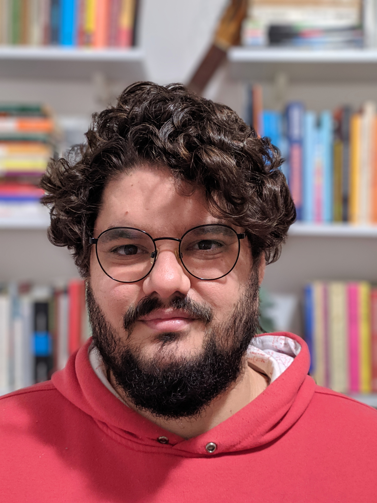

|  | Thank you for visiting my website.
Mail me: carlos.castro at ime.usp.br
Lattes
Social media:
|
Bio
PhD candidate in the Computer Science Graduate Program, Institute of Mathematics and Statistics, University of São Paulo. Master in Pure and Applied Mathematics at Federal University of Santa Catarina. Graduated in mathematics at Federal University of Santa Catarina.
Research areas: image processing, geometry processing, music technology, music programming.
Member of Computer Music Research Group - USP.
Master Thesis
Title: Optimal rotations for overhang reduction
Advisor: Dr. Leonardo Sacht
Undergraduate Thesis (portuguese)
Title: Analysis of image reconstruction methods applied to audio signals
Advisor: Dr. Leonardo Sacht